Remote Play user manual
Remote Play is a web gateway for Axia Livewire and AES67 audio-over-IP. It listens to what is advertising on the broadcast LAN, presents every source in one browser console, and transcodes any of them to Opus so an operator can monitor them from a laptop, a phone, or a wall-mounted panel — without a hardware receiver and without joining the multicast groups themselves.
This manual covers the operator and administrator console. It is written against the shipping build; every label in bold is quoted verbatim from the UI.
This revision is not yet complete. It covers signing in, the Sources console, source lists, monitoring panels, audio outputs, Remote Talk, server settings and licensing. Device management, federation and the REST surface are named where they appear but not yet documented in full — see What this revision does not cover.
1. Core concepts
Sources are discovered, not configured. Remote Play joins the Livewire advertisement group (239.192.255.3:4001) and the SAP groups AES67 senders announce on (224.2.127.254 and 239.255.255.255, both port 9875). Everything advertising on the network it can see appears in the console within a few seconds. Nothing is typed in by hand unless a source does not advertise at all, in which case it can be added manually from an SDP or a multicast address.
A source keeps its identity across restarts. Every source has a stable key
of the form origin:type:channel — origin is local for something this server
discovered itself, manual for a hand-added source, or the id of a legacy
RemotePlay server it was aggregated from; type is lwto, lwfrom, aes67 or
soundcard. Lists and panels store that key and re-resolve it against live
inventory, so a source that goes off air and comes back returns to the same
list entry and the same panel pad rather than becoming a new one.
Two roles, not four. Every account is either admin or user. Admins see the whole console, including the Admin and Settings groups in the sidebar. Users see Sources, Panel and Source Lists, and their own saved panel layouts. Older installations that carried operator or viewer roles coerce them to user on upgrade.
Monitoring is Opus over WebSocket. Pressing Play on a source opens a WebSocket to the server, which joins the multicast group on the operator's behalf, buffers the RTP, and encodes to Opus at the bitrate chosen in the player. The operator's browser never touches the AoIP network.
2. Getting started
Requirements
| Server OS | Linux or Windows, .NET 8 runtime |
| Network | An interface on the broadcast LAN, able to join multicast groups. On a multi-homed host, name it with --Livewire:BindAddress=<ip>. |
| Browser | Any current Chromium, Firefox or Safari. Opus playback needs no plugin. |
| Audio outputs (optional) | For an ALSA (soundcard) output: GStreamer 1.20 or later on a Linux server. AES67 outputs are built in and need nothing extra — but see the note on PTP ports 319/320 under each platform below. |
Running with Docker
The published image is cloudcastsystems/remoteplaycore on Docker Hub —
latest tracks the current release, and each release also carries a version
tag. This is the recommended way to run Remote Play on a server.
docker run -d --name remoteplay \
--network host \
--restart unless-stopped \
-v remoteplay-data:/var/lib/remoteplaycore \
cloudcastsystems/remoteplaycore:latest
The console is then at http://<host>:8080.
--network host is not optional on a broadcast LAN. Livewire and AES67
discovery, the RTP audio itself, and the PTP clock (UDP 319/320, used by AES67
outputs) are all multicast or low-port traffic that does not traverse Docker's
default bridge network. A bridged container (-p 8080:8080 instead of
--network host) starts fine and serves the console, but discovers nothing —
that mode is only useful for a cloud or off-LAN host acting as a federation
front for on-prem servers, or one carrying manually-added sources.
Everything mutable — the LiteDB database, the auth signing key, an uploaded TLS
certificate — lives in /var/lib/remoteplaycore, which the command above keeps
in the named volume remoteplay-data. Upgrades are therefore stateless:
docker pull cloudcastsystems/remoteplaycore:latest
docker rm -f remoteplay
# then the same docker run command as above
Two environment variables shape the container: WEBPORT (default 8080)
moves the HTTP console port — with host networking the container binds it
directly — and DATADIR moves the state directory. Any arguments after the
image name are passed to the server as configuration, so on a multi-homed host
the audio NIC is selected the same way as everywhere else:
docker run -d --name remoteplay --network host \
-v remoteplay-data:/var/lib/remoteplaycore \
cloudcastsystems/remoteplaycore:latest --Livewire:BindAddress=192.168.2.10
The image carries a health check (it polls the API every 30 s), so docker ps
shows the container as healthy once the server is actually answering.
Running on Linux
There is no packaged Linux installer yet; a bare-metal install is built from source (repository access required). Two prerequisites: the .NET 8 SDK and Node.js 18+ (the Node toolchain builds the web console; it is not needed at runtime).
./build/build-web.sh # build the SPA into the server's wwwroot
dotnet publish src/RemotePlayCore.Control -c Release -r linux-x64 \
--self-contained -o /opt/remoteplay # self-contained: no .NET runtime needed on the host
sudo mkdir -p /var/lib/remoteplay
/opt/remoteplay/RemotePlayCore.Control --DataDir=/var/lib/remoteplay
--DataDir anchors the database, signing key and TLS certificate; without it
they land in whatever directory the server was started from. The console is at
http://<host>:8080 (--Http:Port=<n> to move it).
To run it as a service, a minimal systemd unit:
[Unit]
Description=Remote Play
After=network-online.target
Wants=network-online.target
[Service]
User=remoteplay
ExecStart=/opt/remoteplay/RemotePlayCore.Control --DataDir=/var/lib/remoteplay
WorkingDirectory=/opt/remoteplay
Restart=always
AmbientCapabilities=CAP_NET_BIND_SERVICE
[Install]
WantedBy=multi-user.target
AmbientCapabilities=CAP_NET_BIND_SERVICE matters if AES67 outputs will be
used: the built-in PTP slave listens on UDP ports 319 and 320, which a non-root
process cannot bind by default. Without the capability the output still runs —
it free-runs on the system clock and the Audio Outputs page says why — but
it will never lock to the plant's PTP grandmaster. Discovery and browser
monitoring need no special privileges.
For an ALSA soundcard output, install the GStreamer runtime
(libgstreamer1.0-0 gstreamer1.0-plugins-base gstreamer1.0-plugins-good gstreamer1.0-plugins-bad on Debian/Ubuntu). AES67 outputs do not use
GStreamer.
Running on Windows
Windows runs the full console and is the normal development platform; it is
also built from source with the .NET 8 SDK and Node.js 18+ (run
./build/build-web.sh from Git Bash, or npm install && npm run build in
web/RemotePlayCore.Web and copy dist to
src/RemotePlayCore.Control/wwwroot):
dotnet run --project src/RemotePlayCore.Control -- --DataDir=C:\ProgramData\RemotePlay
or publish a self-contained build the same way as on Linux with -r win-x64
and run RemotePlayCore.Control.exe from the output directory. When Windows
Defender Firewall asks on first start, allow access on private networks —
discovery and the RTP audio arrive as inbound multicast UDP, so a blocked
profile means an empty Sources tree on an otherwise healthy network. On a
multi-homed machine set --Livewire:BindAddress to the AoIP NIC, exactly as on
Linux.
Two Windows-specific caveats:
- There is no Windows service wrapper yet — run it in a console session, or from Task Scheduler as an at-startup task.
- AES67 outputs transmit correctly from Windows, but Windows timer granularity and best-effort DSCP marking make it a development-grade sender. For an on-air AES67 output, prefer the Docker image or a Linux host. The ASIO output kind is visible in the console but not yet implemented — an ASIO output reports error on start.
First sign-in
A fresh installation with no user accounts creates a bootstrap administrator and logs a warning saying so. Sign in with admin / admin.
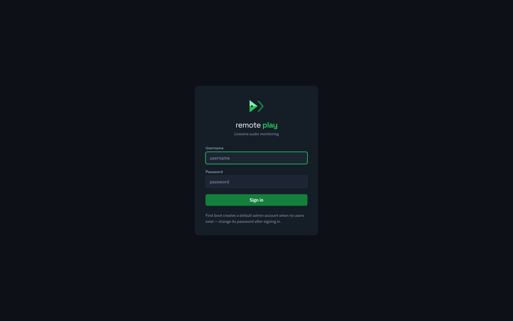
The sign-in page states this directly: "First boot creates a default admin account when no users exist — change its password after signing in." Do that immediately — Password at the bottom of the sidebar. If the server is configured for LDAP or an OIDC provider, directory accounts sign in through the same two fields, and any configured SSO provider appears as its own Sign in with … button.
The console at a glance
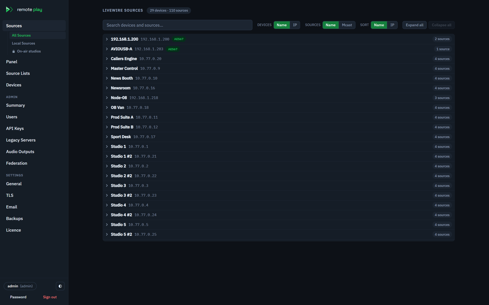
The sidebar is the whole navigation model. The Remote Play mark at the top is the home affordance — clicking it returns to Sources. Below it:
| Group | Entries |
|---|---|
| (top level) | Sources (with All Sources, Local Sources and one entry per source list), Panel, Talk, Source Lists, Devices |
| Admin | Summary, Talk Status, Talk Plan, Users, Groups, API Keys, Legacy Servers, Audio Outputs, Federation |
| Settings | General, Network, TLS, Email, Backups, Licence |
The Admin and Settings groups are admin-only. At the bottom sit the signed-in account, a light/dark toggle, and Password / Sign out.
3. Sources
Sources is the console's home page: every device the server can see, grouped by device, with each device's source count on the right. The header counts what has been found, and a device row expands to its sources.
Each source row carries its channel number, name and multicast address, a protocol badge — LW for Livewire, AES67 for an AES67 stream — and a Play button. Device rows carry the badge too, so a plant running both protocols can be read at a glance.
Finding a source
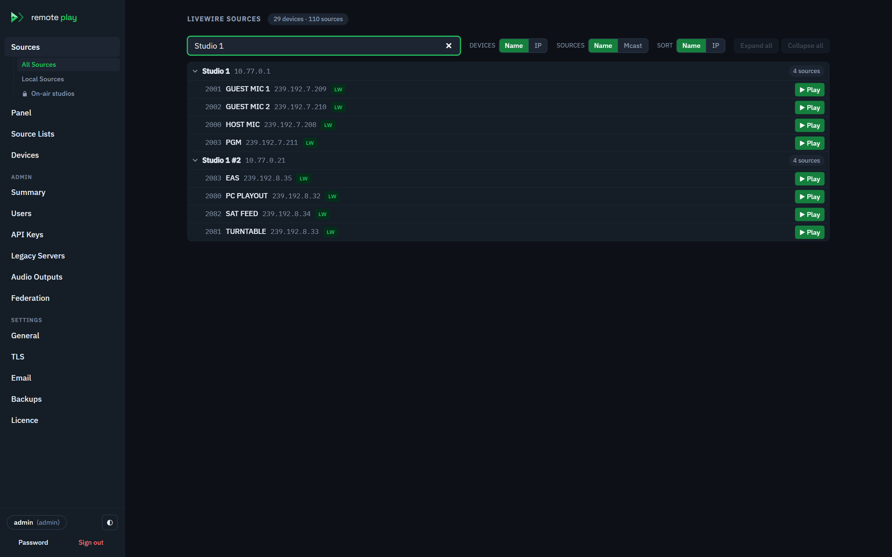
Search devices and sources… filters the tree as you type, matching both
device and source names — above, Studio 1 has narrowed a plant of a hundred
sources to two devices. Three toggles control how the tree is laid out:
| Toggle | Options | Effect |
|---|---|---|
| DEVICES | Name / IP | Label device rows by name or by IP address |
| SOURCES | Name / Mcast | Label source rows by name or by multicast group |
| SORT | Name / IP | Order the tree alphabetically or by address |
Expand all and Collapse all act on the whole tree. On a plant with thousands of sources, collapse first and search — the tree is built for that scale.
The source filters
Under Sources in the sidebar:
- All Sources — everything, including sources aggregated from federated peers and legacy RemotePlay servers.
- Local Sources — only what this server discovered itself.
- One entry per source list — see §4. Lists you can see but not edit carry a padlock.
Listening
Play on a source row starts monitoring it; Stop ends it. The player carries a level meter and a bitrate selector. Some rows cannot be played and say why:
| State | Meaning |
|---|---|
| locked | "Source is locked on the device" — the device itself will not release it. |
| remote | The source belongs to a federated peer; "streams via origin server". |
| manual | "Manual sources can't be monitored from this page yet." |
4. Source lists
A source list is a curated set of sources — a studio's regular feeds, an engineer's fault-finding set, the sources a particular panel draws from. Lists appear as their own entries under Sources, so choosing one filters the tree to its members.
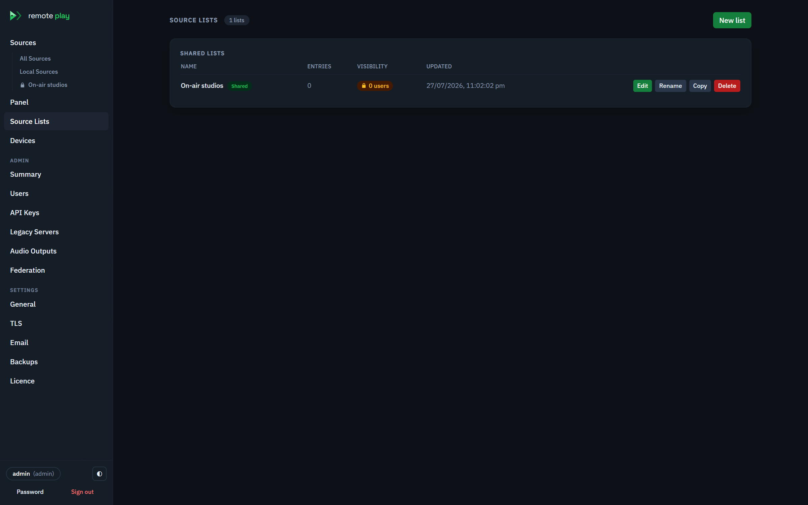
The page separates My lists from Shared lists; a shared list you do not own is marked Shared and read-only. The table shows Name, Entries, Visibility and Updated. Visibility is either All users or an explicit set (1 user / {n} users).
New list creates one, and View opens the editor.
The list editor
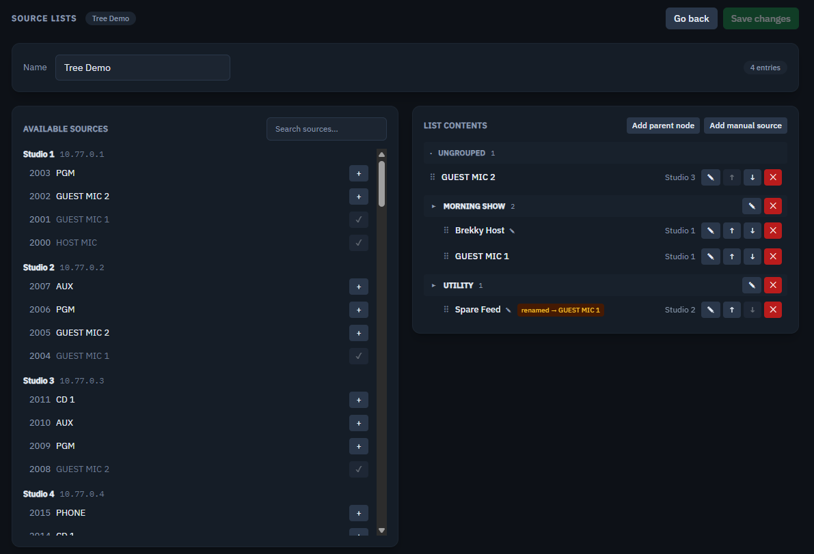
The editor is two panes. Available sources on the left is the live inventory, grouped by device with a Search sources… box; List contents on the right is the list being built. A source row's + adds it ("Add to list"); one already used shows a tick instead ("Already in the list"). Rows can also be dragged across — "Drag sources here, or use a row's + button."
The list name and its entry count sit above both panes, and edits are staged until Save changes — an Unsaved changes marker appears meanwhile, and leaving asks "Discard unsaved changes?". Go back returns to the list index.
Parent nodes
Add parent node creates a named group inside the list — Morning Show and Utility in the capture above. Entries that belong to no group collect under Ungrouped, and each node shows how many entries it holds. A node can be renamed, and removing one is not destructive: "Remove parent node (entries stay, ungrouped)". An empty node prompts "Drag sources onto this node."
Parent nodes are how a long list stays readable — a studio's list can separate the show feeds from the utility ones without needing two lists.
Renaming an entry
The pencil on any entry sets a display name for that entry only; the underlying source is untouched, and the same source in another list keeps its own name. A renamed entry carries a renamed → {original} badge, so nobody has to guess what Brekky Host or Spare Feed actually points at. The device each entry came from is shown on the right of its row.
This is the answer to terse plant labels: the console can say Brekky Host where the device advertises GUEST MIC 1.
Ordering and removal
Each entry has a drag handle plus Move up / Move down arrows, and the red × is Remove from list. Order is the list's own — it is what the Sources tree and the panel drawer show when filtered to that list.
Sources that are not on air
Because entries are stored by their stable origin:type:channel key, a list
keeps working across restarts and re-advertisements. An entry with no live
match is marked missing rather than dropped: "No live source matches this
entry — it is kept but unplayable." Filtering the Sources tree to a list whose
entries are all off air says so plainly: "None of this list's entries match a
live source right now."
A source that never advertises at all can still be listed. Add manual
source takes it directly — by Livewire channel, AES67 multicast address or
soundcard — and the add by SDP or multicast address flow parses a pasted
SDP blob or an address and port, storing the result as a manual source.
Who can see a list
A list is visible to every signed-in user ("Every signed-in user sees this list.") or restricted to named accounts and groups: Allowed users and Allowed groups, where "Only the ticked users and groups (plus admins) see this list." With no groups defined the picker says "No groups defined — create them under Admin › Groups." See Groups.
5. Monitoring panels
A panel is a rack-unit-styled grid of pads. Each pad is bound to a source; pressing it monitors that source, and — on an admin-configured room panel — routes it to the panel's audio output.
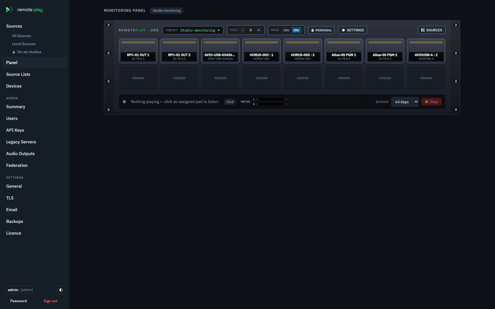
The panel toolbar carries, left to right: the panel name and PRESET selector, COLS with − / + to set the pad columns, a RACK toggle between 1RU and 2RU, the visibility chip (PERSONAL), SETTINGS, and SOURCES — which opens the source drawer on the right.
Underneath sits the player strip: state (IDLE until a pad is pressed), a stereo METER, a BITRATE selector and Stop. An unassigned pad reads ASSIGN.
Assigning sources
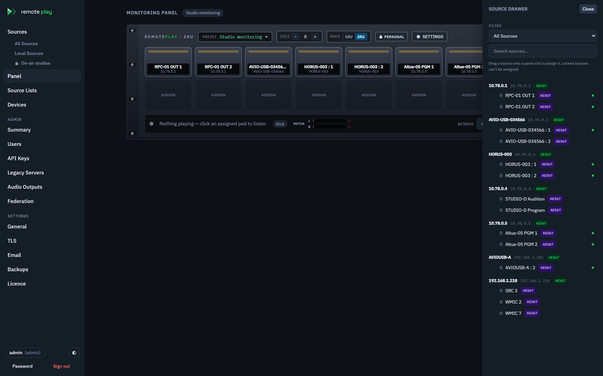
SOURCES opens the drawer: "Drag a source onto a panel slot to assign it. Locked sources can't be assigned." The drawer has its own Filter (any source list) and Search sources… box, and marks sources already on the panel as "Already on the panel".
Clicking an empty ASSIGN pad is the quicker route — it opens a picker for that slot alone, titled Assign source to slot {n}:
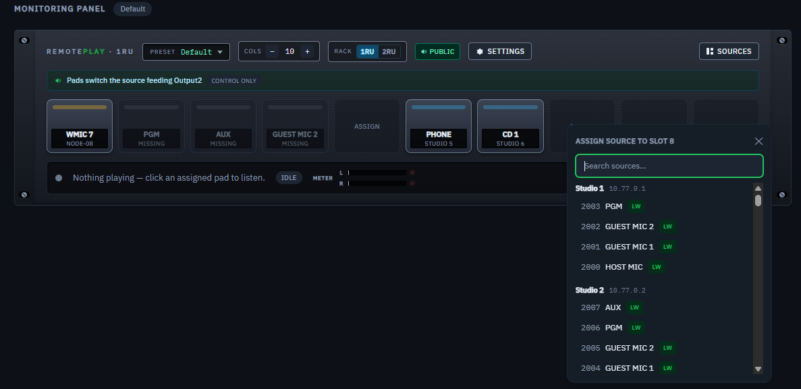
The picker is the same inventory, grouped by device with protocol badges and a Search sources… box, scoped to the one slot you clicked. Choosing a source fills the pad and closes the picker.
Pad labels and lamp colours
Clicking a pad that already has a source opens its editor.
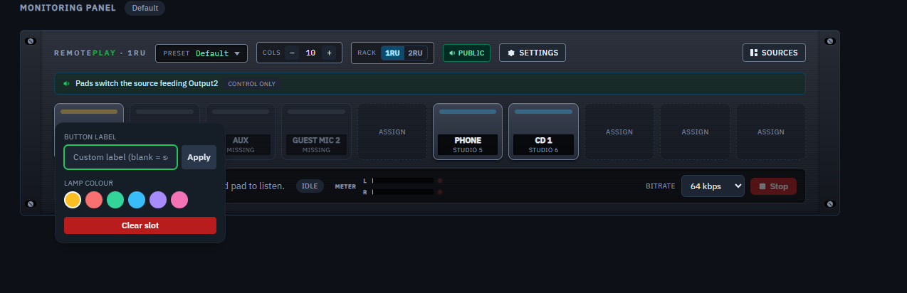
BUTTON LABEL overrides what the pad shows — "Custom label (blank = source name)" — and takes effect on Apply. LAMP COLOUR picks the pad's lamp from Amber, Red, Green, Blue, Violet or Pink, which is what makes a wall panel readable from across a studio: mics on one colour, returns on another. Clear slot empties the pad without touching the layout around it.
A pad whose source has left the inventory keeps its label and shows MISSING beneath it, so the layout never reshuffles when a device drops off air.
Layouts
Panels are saved as named layouts. Layouts lists them, Save as… stores the current arrangement under a new name, and Manage layouts… renames and deletes. The active layout is marked active, and unsaved changes show an unsaved chip beside the panel name. Layouts are per-user: yours are yours unless an admin publishes a panel as a room panel.
Panel settings
SETTINGS on the panel toolbar opens Panel settings, where an administrator turns a personal layout into a room panel.
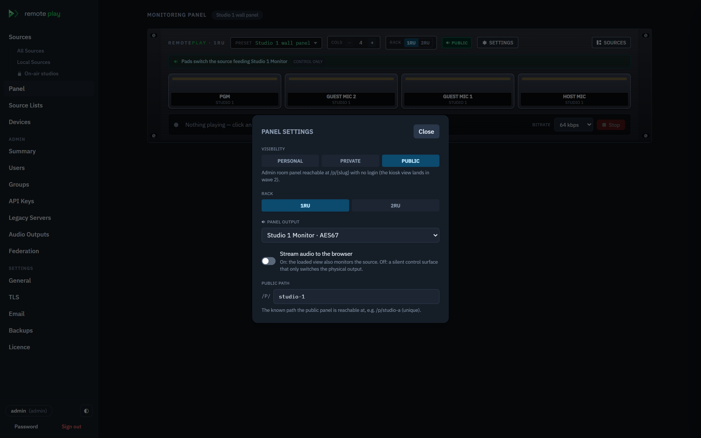
| Setting | What it does |
|---|---|
| VISIBILITY | PERSONAL, PRIVATE or PUBLIC — see below. |
| RACK | 1RU or 2RU. 1RU is a single row of pads; 2RU is two. |
| PANEL OUTPUT | The audio output the active pad's source is routed to. Room panels require one: "Assign an output — room panels route the active pad's source to it." |
| Stream audio to the browser | "On: the loaded view also monitors the source. Off: a silent control surface that only switches the physical output." |
| PUBLIC PATH | The slug a public panel answers on, e.g. /p/studio-1. Must be unique. |
| Allowed users | Private panels only: "Comma-separated usernames who may access this private panel. Blank = any logged-in user." |
| Allowed groups | Private panels only: "Members of a ticked group may access this private panel (in addition to the users above)." With no groups defined it reads "No groups defined — create them under Admin › Groups." |
The allow-lists appear only when PRIVATE is selected — a public panel is open to every session, and a personal one to nobody but its owner.
COLS on the toolbar sets how many pads per row, independently of the rack size. A 1RU panel with four columns is four pads; a 2RU panel with eight is sixteen.
Once an output is bound, the panel carries a banner reading "Pads switch the source feeding {output}", with a CONTROL ONLY chip when browser audio is off. That is the wall-panel case: the operator presses a pad, the physical output follows, and nothing is streamed to the browser at all.
Visibility: personal, private and public
| Visibility | Who reaches it | Output binding |
|---|---|---|
| PERSONAL | Only its owner. "Your own monitoring layout — browser listen only, no output binding." | None — a personal panel cannot drive an output. |
| PRIVATE | Any signed-in user; or, once Allowed users or Allowed groups is set, only those accounts and the members of those groups (admins always). | Required. |
| PUBLIC | Any signed-in user, at the panel's own path /p/{slug}. |
Required. |
Public does not yet mean anonymous. The in-app hint reads "reachable at /p/{slug} with no login (the kiosk view lands in wave 2)". The kiosk view has shipped, but the no-login half has not: the endpoint behind it is still gated on a valid user session, and an external panel token — the
pt_credential issued under Panel control — satisfies only the panel policy, not this one. A wall display therefore still needs a signed-in browser session today. Treat the hint as stale on both counts.
The kiosk view
A public panel opens at /p/{slug} as a chrome-free view: the panel name, the
rack, and nothing else — no sidebar, no navigation away from it.
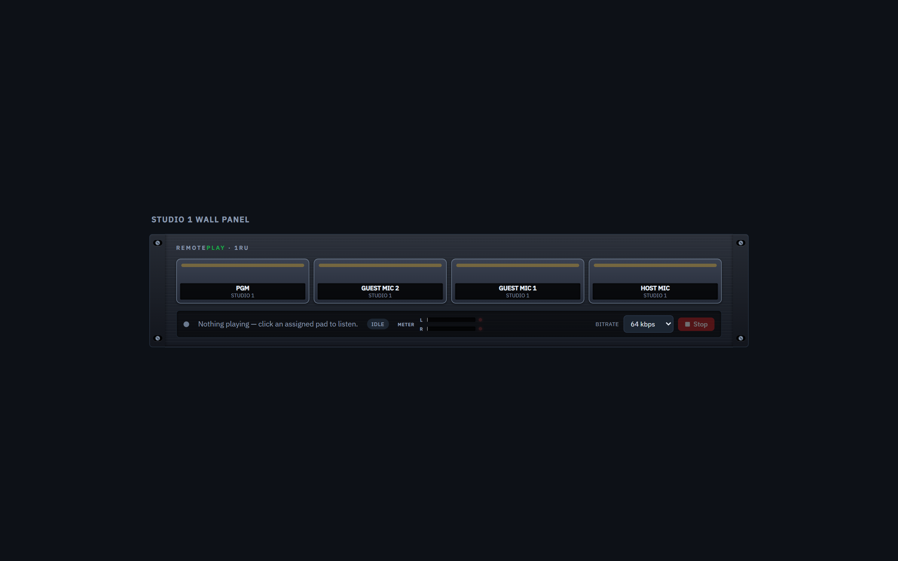
Pads behave exactly as they do in the console: pressing one makes it the active pad and routes its source to the panel's output. A pad whose source is not in live inventory shows MISSING rather than disappearing, so a wall panel does not silently reshuffle when a device drops off air. If the slug does not match a public panel, the view says so: "No public panel at "{slug}" — check the address with your administrator."
A Talk key placed on a room panel renders differently here than everywhere else it appears. A kiosk display has no station logon of its own — it is a shared wall screen, not a signed-in operator's intercom — so a talk pad on a kiosk is a static, read-only key: it shows the channel's live name (still resolved from the network, the same as any other pad) and a TALK badge, with no lamp, no key press and no listen level, plus a link to open the full Remote Talk client in a new tab for anyone who needs to actually talk or listen. See Panels and kiosk displays under Remote Talk for the reason a kiosk key can't tally who's talking today.
6. Audio outputs
An audio output makes the server an audio emitter, not just a browser gateway. A source routed to an output is passed through as live audio — RTP in, PCM out — in addition to the Opus stream a browser might be listening to. This is what lets a panel press change what comes out of a studio's overhead speakers.
Audio Outputs is admin-only. An ALSA output needs GStreamer on the server; an AES67 output is built in, with its own PTP clock — see the platform notes in Getting started for the port-319/320 privilege it wants.
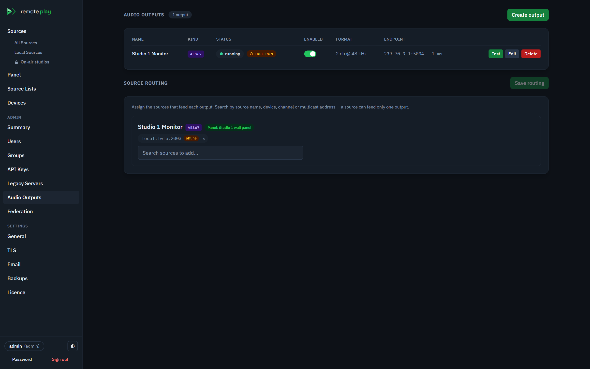
The table lists each output's NAME, KIND, STATUS (running, stopped or error), an ENABLED toggle, FORMAT and ENDPOINT. Test pushes tone to the output so it can be confirmed at the speaker without routing a source to it.
Three kinds:
| Kind | Endpoint | Notes |
|---|---|---|
| ALSA | A device string such as hw:1,0 |
Linux hosts. |
| AES67 | A multicast group, port and packet time | Sends AES67 onto the AoIP network. |
| ASIO | An ASIO driver name | "ASIO runs on Windows hosts only." On a non-Windows console the picker is disabled with "This console isn't running on Windows — the ASIO device can't be configured from here." |
Configuring an AES67 output
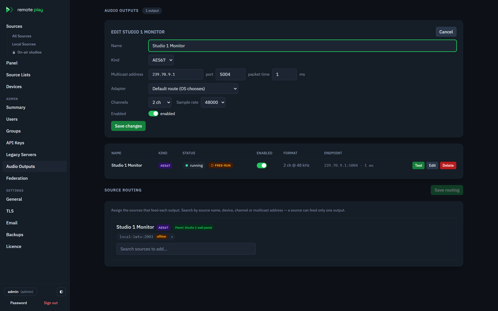
| Field | Meaning |
|---|---|
| Name | Free text; what the panel's output picker and the routing editor show. |
| Kind | AES67. |
| Multicast address | The group the stream is sent to, e.g. 239.70.9.1. Validated: "Enter a valid multicast address (e.g. 239.69.1.5)". |
| port | Destination UDP port; AES67 convention is 5004. |
| packet time | Packet time in ms. 1 ms is the AES67 interop point — at 48 kHz that is 48 frames per packet. |
| Adapter | The egress interface. Default route (OS chooses) lets the host decide; on a multi-homed server pick the AoIP NIC explicitly, or the RTP leaves on the wrong network. An adapter that no longer exists is marked not found on this host. |
| Channels / Sample rate | 2 ch @ 48000 for a normal stereo AES67 stream. |
| Enabled | Whether the sender runs. |
The output is announced over SAP so AES67 receivers can discover it, and the announcement declares the sender's clock. A clock chip shows which: PTP ("Locked to PTP grandmaster … — clock-compatible with the AES67 plant") or Free-run ("Free-running on the system clock. Receivers that require a shared PTP clock may refuse to subscribe."). Free-run is legal and announced honestly, but a Dante or Ravenna receiver may decline it.
Routing sources to outputs
SOURCE ROUTING, below the table, is the persistent assignment: "Assign the sources that feed each output. Search by source name, device, channel or multicast address — a source can feed only one output."
Each output lists what feeds it, and carries a Panel: {name} chip when a panel drives it — "This output is driven by a panel — the selected pad routes its source here." A routed source that has left the inventory is marked offline: "This source is routed but is not in the live inventory right now — the device may be offline or renamed. The route is kept." Routes survive the source going away, which is what you want when a studio is simply switched off overnight.
Changes are staged until Save routing; an Unsaved routing changes note appears while they are.
7. Server administration
Groups
A group collects users so a panel or a source list can be granted to all of them at once, rather than naming each account on every panel.
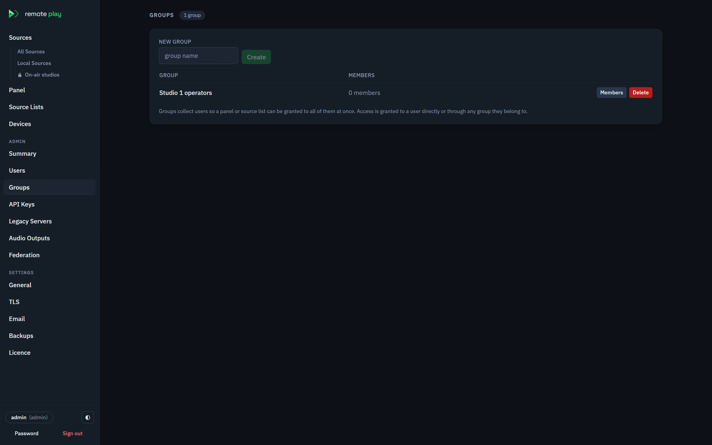
New group creates one; Members picks the accounts in it. The page's own summary states the rule: "Groups collect users so a panel or source list can be granted to all of them at once. Access is granted to a user directly or through any group they belong to." Deleting a group is not silent about consequences — "Delete group "{name}"? Panels and lists that grant it lose that grant."
Grants are additive and independent: a user reaches a private panel if they are named on it directly or belong to any group it grants. Administrators always have access regardless.
The Allowed groups hint in panel settings says "Enforced in wave 2". For private panels that is out of date — group membership is already checked server-side when deciding who may drive a panel.
General
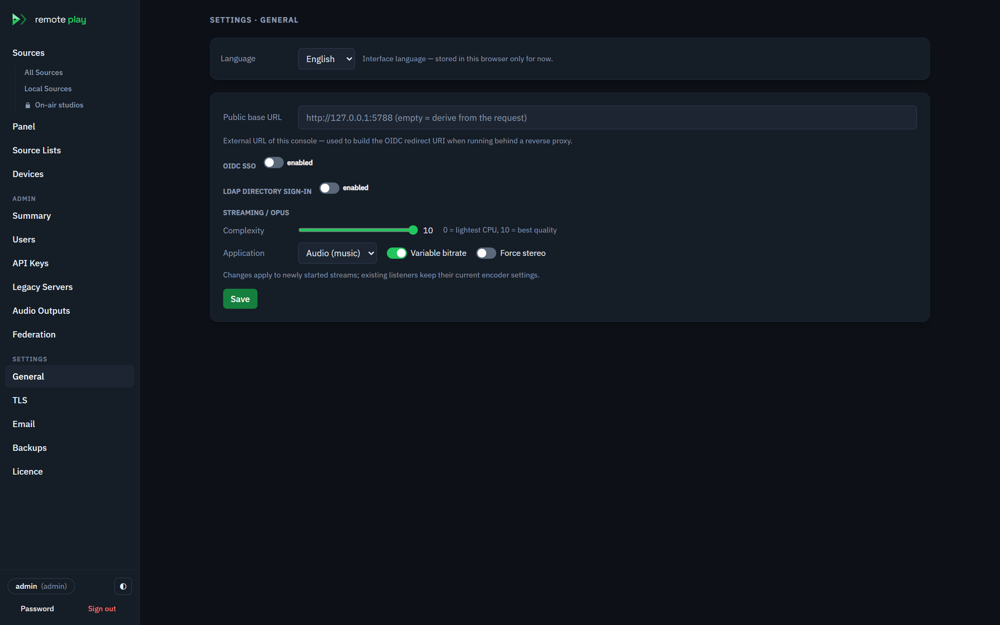
Public base URL is the address the server advertises for itself; blank derives it from the request. OIDC SSO and LDAP directory sign-in are configured here, each with Role mappings that translate a claim value or directory group to the admin or user role — first match wins, with a Default role and an option to refuse unmapped users. The redirect URI to register with an OIDC provider is shown for copying, and "Internal sign-in always remains available as break-glass", so a misconfigured provider cannot lock everyone out. Test connection validates LDAP against the saved settings, so save before testing.
Streaming / Opus controls the encoder every browser listener gets: Complexity ("0 = lightest CPU, 10 = best quality"), Application (Audio (music), VoIP (speech) or Low delay), Variable bitrate and Force stereo.
TLS
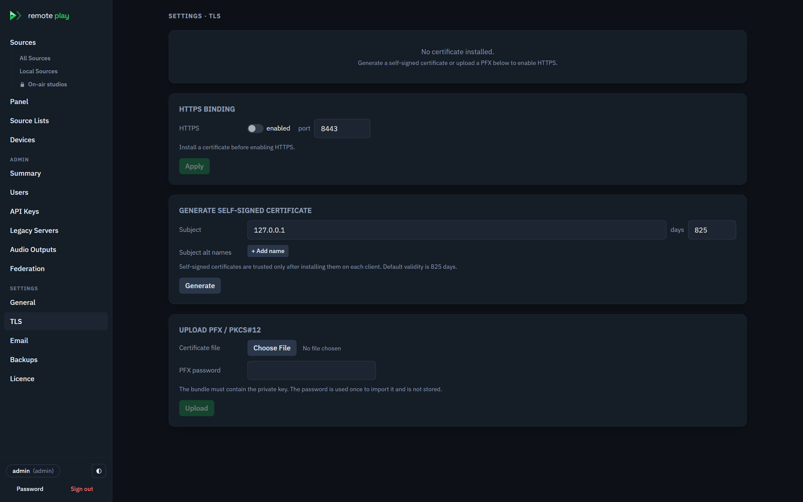
Current certificate shows the installed certificate's Subject, Issuer, Validity, Thumbprint and Subject alt names, along with its source (uploaded or self-signed) and how long it has left — "Valid — {days} days remaining", "Expires in {days} days … renew soon", or "Expired on {date}".
Below it, HTTPS binding enables HTTPS on a chosen port ("Install a certificate before enabling HTTPS"), Generate self-signed certificate mints one for a list of DNS names or IPs, and Upload PFX / PKCS#12 installs a real certificate. Remove certificate disables HTTPS again.
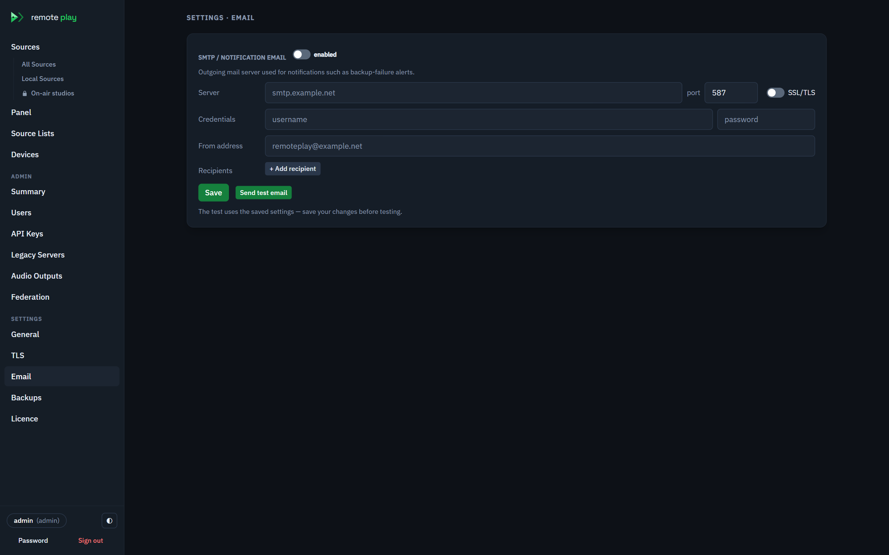
"Outgoing mail server used for notifications such as backup-failure alerts." Server, port, SSL/TLS, optional credentials and the From address. A stored password is never returned to the browser — the field shows password set, and "leave the field empty to keep it".
Backups
Settings › Backups is a placeholder in this build: "Scheduled device config backups are coming with a later stage of the port." Device configuration backup itself lives under Devices.
8. Licence
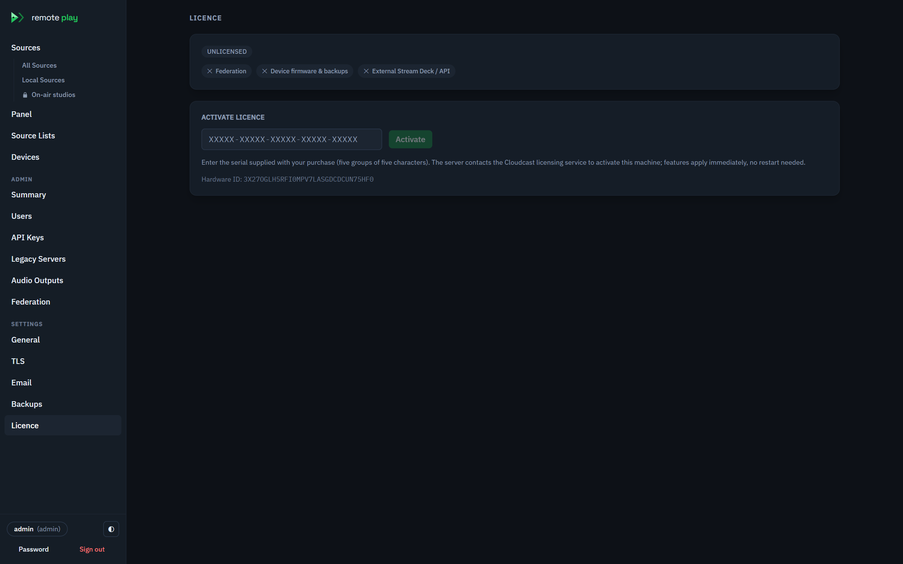
Settings › Licence shows whether the installation is Licensed or Unlicensed, and for a licensed one the Licensed to name, Serial, Issued date and Expires date — which may read Never (perpetual).
Activation takes a serial: enter it under Activate licence and press Activate. Activation is bound to the machine, and the page shows the Hardware ID: the licence is issued against, which is what support needs when a serial has to be reissued for new hardware. Deactivate licence releases it.
A licence grants named features. Four are gated in this build:
| Feature | What it unlocks |
|---|---|
| Federation | Aggregating sources from peer servers. |
| External Stream Deck / API | Panel tokens and the external control API. |
| Device firmware & backups | Firmware banks and device configuration backup/restore. |
| Remote Talk | The intercom: station logon, talk/listen keys, and the Talk Plan admin pages. |
Reaching a gated feature without a licence shows the reason inline: ""{feature}" requires a licence — install one under Settings › Licence." Audio monitoring itself is not gated — an unlicensed server still discovers sources and streams them to a browser, so a plant is never taken off air by a licence problem.
Remote Talk is gated differently — a timed preview, not a hard stop. Where Federation and device management simply disable their pages, an unlicensed station can still log on and a channel can still be talked or listened to: the connection gets a 5-second live audio preview, then the socket closes with "Remote Talk preview ended — a licence is required to continue." and does not reconnect on its own. Nothing about choosing a station or seeing your assigned keys is blocked — only the audio.
9. Remote Talk
Remote Talk is a browser-based intercom built into the same console: an operator's browser opens a microphone and a live audio connection to the server, keys into shared channels, and hears everyone else on that channel except themselves — the same operational shape as a hardware party-line system (Clear-Com, RTS and similar), with no beltpack and no intercom panel.
The full architecture brief lives alongside this file. For the deep version — the ten-millisecond mix matrix, mix-minus worked through, the four channel kinds, the panel plane, recording, and the federated fleet, all with hand-drawn schematics and the measured cost model — open remote-talk.html (a self-contained page in this folder). This chapter is the operator-and-admin walkthrough; that page is the engineering reference. Cross-references below point into it by section.
Concepts
| Term | Meaning |
|---|---|
| Station | A predefined intercom identity — like a SIP extension — with a display name, an allowed set of channels, and a panel profile of keys. A signed-in user logs on to a station; a station is online in one place at a time, and logging on elsewhere while it's already in use is refused. |
| Channel | A shared audio bus, one of four kinds. Party line — every assigned member can talk and everyone can listen. Group — only its talker stations may key up, but listening can be left open to anyone. P2P — a private line between exactly two stations. IFB — a program feed (an ordinary Remote Play source) that talk audio interrupts and ducks. |
| Talk key | Opens the mic into a channel. Depending on how the key is configured: hold it down for as long as you want to talk (momentary), or give it a quick tap to lock it open until you tap it again (latching) — some keys support both, using a hold-vs-tap split. |
| Listen key | Subscribes to a channel's mix without opening the mic, with its own listen-level control per key. |
| Tally | The lamp on a key lights whenever someone is talking on that channel — including you, with a small mic badge to tell the two apart. |
| Monitoring | The same connection a station uses for the intercom can also carry an ordinary Remote Play source — a Livewire feed, an AES67 stream — mixed in alongside the talk channels, so a station can listen to on-air audio without a second player. |
| Dim | While an IFB channel has an interrupt talker keyed up, the program feed it carries is automatically turned down (ducked) by a configured amount, and returns to normal the moment nobody is talking. |
Stations, channels and panel profiles are set up by an administrator under Talk Plan — see Admin: Talk Plan below. An operator only ever chooses a station and presses keys.
The /talk client
Signed-in users reach Remote Talk two ways. Inside the console, the Talk sidebar entry opens a page with a station picker, a logon bar and the same key grid described below, plus an Open Talk client ↗ link. The dedicated /talk address is the same intercom with none of the console chrome around it — a full-screen page meant to be left open on its own monitor or a second device, rather than navigated to occasionally.
Joining a station goes: sign in (the same login form the console uses) → pick a station (skipped automatically when only one is assigned) → Join, which triggers the browser's microphone permission prompt → the station's panel profile appears as a full-screen rack of keys. "Joining will ask for microphone access — that's needed so you can talk. You can still listen if you decline." states this up front; declining still lets every listen key work, it just leaves every talk key inert, with "Microphone access was denied — you can still listen, but talk keys won't work." shown in the footer.
Each key is split into a talk half and a listen half. The talk half is pressure-sensitive to timing, not to a separate mode switch: hold it down and the mic opens for as long as you hold it; tap it quickly and it locks open until you tap it again (a key can be configured as always-momentary, always-latching, or this hold-vs-tap split). The listen half toggles that channel's subscription, and its small level control opens a popover with a gain slider and a Mute/Unmute toggle — muting a listen key is independent of whether you're talking on it. A footer strip shows the station name, the connection state, and a MIC badge whenever any key's mic is open; Leave logs off and returns to the station picker.
Panels and kiosk displays
A Talk key can also be placed on an ordinary monitoring panel or room panel (an admin arranges this — the button-editing flow for talk keys is the same panel-configuration surface as a source pad; see Monitoring panels), so an operator's regular panel can carry both source pads and intercom keys side by side. On a signed-in console session the key behaves exactly as it does at /talk — the panel and the /talk client share the same underlying connection, so a key pressed on one reads and controls the same channel as the other.
A talk key on a kiosk (/p/{slug}) panel is different. The kiosk view is
a shared wall display, not a signed-in operator's own intercom, so it has no
station logon of its own to drive a live key. A talk pad there renders as a
static, labelled key instead: the channel's live name (resolved from the
network the same way a source pad's name is, so a renamed channel or a
deleted one — shown as missing — still reads correctly) and a TALK
badge, with a link that opens the full Remote Talk client
in a new tab for whoever needs to actually key up. There is no lamp and no
tally on a kiosk key today — see the callout below.
Why a kiosk talk key can't show who's talking (yet). Tally is pushed to a station over its own authenticated connection — it isn't part of the ordinary source inventory a kiosk session already has read access to, and a kiosk session logs on to no station of its own. Reaching a channel's live tally from a kiosk page would need either a new tally surface a plain signed-in session can read, or a way for a kiosk to join a channel listen-only without a full station logon — neither exists yet, so the honest choice is a clearly-labelled static key rather than one that always reads "nobody talking."
Station keys, Reply, and shared crew panels
A panel key doesn't have to target a channel — it can target a person. Such a key (its tooltip reads "Direct line to a person (station key)") opens a private line straight to another station without an admin ever drawing a P2P channel for the pair. The server materialises a hidden private line on demand when both ends are logged on and tears it down when they're not; it never shows up in the channel plan, and a third station never sees it — a station key is a private line that stays private by construction. The architecture brief §06 draws how one shared panel is rendered differently for each viewer.
- The Reply key. A key labelled Reply dials back whoever last called this station. It shows a Recent caller list — "No recent callers" until someone does — resolving each caller to their display name (falling back to "Station {id}" for a caller whose name isn't known, e.g. one at another federated instance). It saves hunting for the right tile when a call comes in.
- Shared, self-excluding panels. One profile can carry a station key to every member of a group; each member's panel then shows a direct key to everyone except themselves — their own key is simply hidden, because a private line to yourself is nonsensical. An admin builds exactly this in one action with the Panel Builder.
- Across sites. When the two ends of a station-key line are logged on to different federated instances, the private line still carries audio (with mix-minus, and staying invisible to everyone else) for the common case where the config authority hosts one end — see the fleet. The only piece not yet crossing instances is the far-end tally glow on a cross-site pair; the audio is unaffected.
Per-key appearance, saved levels, and paged racks
Each key on a profile can be tuned by the admin, and each operator's own listen settings are remembered:
- Custom label — any text (falling back to the channel or person's name when blank), so a key can read FLOOR rather than the channel's full name.
- No-latch keys — a key can be marked momentary-only for discipline-critical channels; the client then shows "Momentary only — this key can't be latched. Hold to talk." and a tap will never lock the mic open.
- Default listen level — a key can start at a set level (or muted) on logon, before any personal adjustment.
- Saved personal levels. Your Listen level and mute/unmute per key are remembered per station and restored when you log back on, instead of resetting every time. Reset to default on a key's level popover clears your saved value and returns it to the key's authored default — "Clear your saved level and go back to this key's default ({value})". Personalisation is listen-only: it never changes your talk rights or the key layout, which the admin owns.
- Paged racks. A profile with more keys than one rack shows can span several pages; the client renders a page selector ("Page {n}"), and slot numbering restarts on each page.
Admin: Talk Plan
Admin › Talk Plan is where stations, channels and panel profiles are built, in three tabs.
Stations lists every station with its live Status (Online or Talking while logged on, blank otherwise), its assigned users and allowed channels, and its panel profile. The station editor sets Name, an Enabled toggle ("Disabled stations refuse logon and aren't advertised as a source."), Assigned users ("Empty = any authenticated user may log on. Admins can always log on regardless of this list."), Allowed channels, and a Panel profile (or None — no keys).
Channels lists every channel's Kind, talker count, whether listening is open, where it's homed, its priority and any output bridge. The channel editor sets Name and Kind (Party line / Group / P2P / IFB); Talker stations (a P2P channel enforces "A P2P channel needs EXACTLY two talker stations"); Listener open ("On = any station may listen. Off = only the listed talkers may listen."); Homed on (this instance or the cloud instance, relevant only once more than one instance shares a plan — see Multi-site); and Priority, which decides which channel wins if several interrupt at once.
An IFB channel additionally takes a Program source — any ordinary discovered source, never another talk channel or station ("a talk source can't be used as an IFB program source") — and a dim control: left off, the program ducks by the engine's built-in default while an interrupt talker is keyed up; switching on Custom dim level exposes a −60…0 dB slider, labelled "How far the program is ducked while an interrupt talker is active." Either way, the dim is not a standing attenuation — it engages only while somebody is actually talking on that IFB channel and lifts the instant they stop. Any channel — IFB or not — can also carry an Output bridge, an optional audio output its mix is additionally sent to, which is how a talk channel reaches a hardware panel or a studio's wall speakers rather than only browser sessions.
Profiles are named sets of keys: each key picks a Channel, a Slot (the position in the rack), a Talk mode (Momentary / Latching / Both), whether it's listened to by default on logon, and a lamp Colour from the same six-swatch palette panels use. A live Rack preview below the key table shows the profile as it will actually lay out.
If this instance's Talk Plan is subscribed to another instance's plan (see Multi-site), every tab turns read-only with a banner: "This talk plan is centrally managed by {authority} — it's read-only here. Edit it from the authority instance instead."
Panel Builder and bulk assignment
Building a shared crew panel one key at a time is tedious, so Talk Plan › Panel Builder does it in one action: "Build one shared panel for a group of people and assign it to all of them in one action — pick the members, and each gets a key to call every other member directly." Pick the members (the order you pick sets their key order), optionally add ordinary Shared channels (a party line the whole group already has), name it, and Preview as any member to see their self-excluded view — "That member's own key is hidden, exactly as it would be on their real panel." Build panel and assign to members creates the profile and assigns it to every chosen station at once. A member not yet allowed on a chosen channel isn't blocked, just flagged: "{member} isn't allowed on "{channel}"" — the key renders but won't work until you grant it.
Two more assignment tools sit on the Stations tab for running a fleet of panels rather than editing one PUT at a time:
- Bulk assign panel — select stations with the checkboxes, choose a profile, and Assign to selected sets it on all of them; Clear assignment removes the explicit assignment so the station falls back to the site default.
- Site default panel — "The panel profile a station renders when it has no explicit assignment of its own." Precedence is a station's own assignment (even a broken one) first, then this site default, then nothing. It's instance-local, like the site alias — not part of the synced plan. An Effective panel preview on each station answers "what will this person actually see", resolved the same way logon resolves it, and a Missing drift badge flags a station whose assigned profile no longer exists.
Panel templates are versioned. Editing a profile produces a Draft until you Publish it: "stations on this instance see the draft immediately, but the rest of the fleet only ever receives the last published version." Version history lists every publish, and Roll back re-publishes an earlier snapshot as a new version (nothing is deleted from the history). The architecture brief §06 covers the whole panel plane.
Recording a channel
Any channel's mix can be recorded, at whichever instance homes it — so a cross-site channel is recorded exactly once, at home, not per site. Recording is its own licence feature (Channel recording), separate from Remote Talk: an instance can run intercom without it, and the Recordings page and recorder sit idle until it's licensed.
Set a channel's Recording mode in the channel editor — ""Off" never records; "Always" records continuously; "On-demand" records only while an operator arms it from the channel list below (session state — not saved with the plan, and cleared on restart)." An on-demand channel is started with Arm and stopped with Disarm; its badge flips from "On-demand" (disarmed) to a red REC when live.
- Privacy is enforced, not optional. A recorded channel raises a "This channel is being recorded" indicator on every member's panel the moment they log on. A P2P (private) line refuses recording altogether unless the instance has explicitly enabled private-line recording and the mode is Always — "On-demand is never permitted for a private line."
- Storage. Segments are real Ogg/Opus files on local disk, rotated on a timer and each carrying a JSON timeline sidecar of who spoke and when (the Timeline view plays it back). If an S3 bucket is configured they're also mirrored offsite — using the instance's own AWS role, so no keys are stored — on a background queue that never blocks recording and never deletes the local copy on a failure (upload failures are counted in Talk Status).
- Retention and legal hold. A retention policy sweeps old local segments; a recording on legal hold (Place hold / Release hold) is exempt and refuses deletion until released. S3 expiry is a bucket lifecycle policy, not the app's job.
The Recordings page filters by channel and date and offers Play, Timeline, legal-hold and delete; the recorder's own health (segments, faults, upload faults, armed channels) is a Recorder card on Talk Status. Full detail — the data path, the settings API, download tickets — is in the architecture brief §07.
Talk Status diagnostics
Admin › Talk Status (also reachable from the Talk status link on the Talk page) is a live, read-only view of the mix engine and every logged-on station, refreshing once a second while the tab is visible.
The Mixer card is the engine's own health: Running/Stopped, tick count, p50/p99 tick timing with a small sparkline, Missed deadlines (should stay at zero — a rising count means the mixer thread is falling behind), and Crosspoint ops. The Encoders figure is the mixer's own dedupe accounting made visible: "{encoders} encoders for {members} members", broken down as "{shared} shared + {personal} personal" — everyone on a bus who ISN'T currently talking hears the identical mix, so they share one Opus encode between them; only active talkers get their own mix-minus encode. A ten-member party line with two people talking reads 3 encoders for 10 members (2 personal + 1 shared) — seeing personal ≈ members instead is a sign something is keeping almost everyone "talking" (a stuck key, most likely).
The Buses table lists every configured bus with its Kind chip (Party line/Group/P2P/IFB), live Talkers/Listeners counts, and any Bridged output — a dim row means the bus is currently inactive (nobody on it).
The Sessions table is one row per logged-on station: User, Connected (age), Signaling state, ICE state, the selected Candidate pair, Packets (↑up/↓down counts plus a live rate), an Uplink level meter, and whether the session is Licensed. Reading the connectivity columns: Signaling just tracks the WebSocket (Connecting/Connected/Closed); ICE is the WebRTC connectivity check itself — green means it settled on a working path, amber means it's still negotiating (new/gathering/checking), red means it failed or disconnected. The Candidate pair names which kind of path that settled on: host (green) is a direct LAN path — the common case on-prem; srflx (blue) went through STUN to cross a NAT; relay (amber) went through a TURN relay, which this build doesn't configure by default, so seeing one at all is worth investigating. "no pair yet" just means ICE hasn't settled yet. Expanding a session's row (▶) shows its channel keys — Talk/Listen dots and each key's Gain — useful for confirming a station's own state without asking the operator.
An Inputs section (collapsed by default — Show inputs) lists the mixer's raw per-station and per-program input queues: Active, Queued samples, Dropped and Starved ticks — a station whose Starved ticks keeps climbing is under-running its jitter buffer, the same diagnostic language the AES67 output pages use.
Multi-site: federation and shared plans
Two or more RemotePlay instances — typically an on-prem server and a cloud instance — can share Remote Talk across a federation link (see Federation, not yet documented in full in this revision). Two things ride on top of that link once both sides are licensed for Federation and Remote Talk:
- A shared channel plan. One instance is the plan's authority —
admins edit stations, channels and profiles there — and any number of
peers can be a subscriber, pulling a read-only copy of that plan on the
same interval federation already polls on. Switching an instance to
subscriber mode is a replace, not a merge: everything local is
overwritten with the authority's plan, which is why the Talk Plan tabs go
read-only under a subscriber (see Admin: Talk Plan
above). Choosing this mode is a REST call today (
PUT /api/talk/config) — there is no console page for it yet in this revision. - Remote tally. A station logged on at one instance shows up as talking on a shared channel at the other, the same lamp/tally behaviour as a local talker. The one thing to know operationally: what travels between instances is "this station has a key open somewhere," not which channel — so a remote talker tallies on every shared channel they're allowed to use, not just the one they're actually on. If that's ever ambiguous, the channel plan itself (shared identically on both sides) is the source of truth for which channels a given remote station could be on. (More recent builds narrow this to the specific channels a remote desk is keyed on, so a private line no longer lights every channel it merely offers — see the architecture brief §08.)
The fleet: homing, the dashboard, and the portal
Beyond a single authority-and-subscriber pair, Remote Talk runs as a fleet — several instances, one shared plan, audio homed where its people are. Three pieces make that manageable; each is drawn out with schematics in the architecture brief §08.
- Homing decides where audio mixes, and it's per channel. A channel's Homed on setting picks the instance whose matrix mixes it: This instance, Cloud (whoever advertises it as theirs — the older relative spelling), or a specific named Site. The point is latency and cost: home a London crew's own party line on London and two London desks mix locally with no inter-site hop; home a fleet-wide all-call on the cloud and every site exchanges just one audio leg with it, whatever its headcount. The site a channel names must be a reachable federation peer of every instance carrying its members — a spoke can't reach another spoke unless they directly peer.
- The Fleet dashboard (Fleet in the sidebar) is a hub-side view of every federated instance built on the existing federation link — no extra service. Per instance it shows Sessions, Active channels, Legs, whether the Mixer is running, its config mode and licence, marking a missed peer Stale or Unreachable while keeping its last-known identity. It also draws the Inter-site legs between instances and a summary crosspoint matrix — with an honest note that each instance reports only its own total leg count, so for who's-talking-to-whom detail you open that instance's own Talk Status. An admin can also drive a member from the hub (view its config, set its config mode or site alias) — but only over the federation link, only scoped and audited, and only if that member has opted in with Allow this instance to be managed (off by default).
- The portal is the fleet's single front door. A station lives on one instance, so with several instances an operator needs routing. The portal (a "Session broker") is one URL: sign in once, and it allocates an instance by policy and redirects you — "Routing you to {instance} — {reason}." The rules run in strict order: if your station is already live somewhere it sends you there ("your station is already active there", which also stops the same station being live twice); then a one-instance fleet lands on the hub; then it prefers the instance that hosts your channels (fewer legs); then the least-busy instance below a session ceiling; then, if all are full, the hub. Under shared single-sign-on (Cognito) the redirect is silent — the target instance already trusts your session — and mobile clients use a one-time, 60-second logon ticket instead. Identity itself (provisioning, group sync, disabling an account across the fleet) is centrally managed; disabling a user "immediately ends any of their live Talk sessions and blocks sign-in until re-enabled."
Licensing
See §8 Licence for the general licence page — Remote Talk is one of its gated features, and unlike the others it degrades to a timed audio preview rather than disabling its pages outright. One inconsistency worth knowing about until it's tidied up: the Talk Plan admin pages don't yet show the same "requires a licence" banner Federation and device management show when unlicensed — an unlicensed admin can still open the editors and appear to save changes, and the server rejects the write the same way it rejects any other unlicensed Talk Plan call. Treat a Talk Plan save that silently fails on an unlicensed instance as this, not a bug in what you typed.
Troubleshooting
| Symptom | Likely cause | What to check |
|---|---|---|
| Talk key never opens; mic never seems to arm | The browser refused microphone access, or the page isn't a secure context | getUserMedia needs HTTPS (or localhost) — a plain http:// console reachable only on the LAN won't even prompt. Check the browser's address-bar mic/permission icon for this site; the client shows "Microphone access was denied — you can still listen, but talk keys won't work." if it was refused outright. |
| Station shows Connecting…/Reconnecting… indefinitely | A stalled WebSocket or ICE negotiation that never settles | Do a hard refresh rather than re-pressing Join — the client backs off and retries up to 5 times before giving up with "Connection lost after {count} attempts.", and a fresh page load restarts the whole connection cleanly instead of retrying a wedged one. |
| No audio from a channel you're listening to | The channel has no active talker, the listen key is muted, or the session/mixer itself isn't healthy | Confirm the key's listen half is lit and not muted, then check Talk Status: the session's Uplink meter and the channel's row under Buses (Talkers/Listeners) show whether there's actually anyone to hear. |
| A kiosk talk key never lights up | Expected — kiosk keys are static today, see Panels and kiosk displays | Sign in at /talk (or use a panel from a signed-in console session) to get a live, tallying key. |
| Talk cuts out after a few seconds every time | The instance isn't licensed for Remote Talk | Check Settings › Licence for the Remote Talk feature — unlicensed sessions get a 5-second preview, then close with "Remote Talk preview ended — a licence is required to continue." (see Licensing above). |
What this revision does not cover
These areas exist in the product and are reachable from the sidebar, but are not yet documented here. They are the subject of the next revisions:
- Devices — Axia device management: LWRP terminal, configuration backup and restore, scheduled backup tasks, firmware banks.
- Federation and Legacy Servers — aggregating sources from peer RemotePlay servers and from legacy RemotePlay installations. (Remote Talk's own use of the federation link — shared plans, homing, the Fleet dashboard and the portal — is covered in §9 The fleet and, in depth, in remote-talk.html.)
- Summary and Users — the admin overview and account management.
- Panel control — issuing
pt_panel tokens for external controllers. - The REST API and WebSocket streaming contract.
API Keys and Settings › Backups are placeholders in this build and say so in the UI; there is nothing to document yet.
Generated against main @ c50db91, RPC-1…RPC-199 (the Remote Talk epic
RPC-126, through cross-instance station-key pairs). The Remote Talk chapter is
the operator-and-admin walkthrough; the full engineering reference is
remote-talk.html in this folder. Screenshots captured with
build/manual-screenshots.mjs against a live instance fed by
RemotePlayCore.LivewireSim and RemotePlayCore.Aes67Sim; see
manual-maintenance.md.